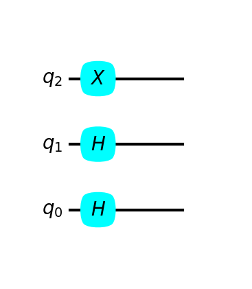
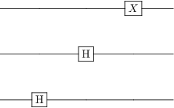
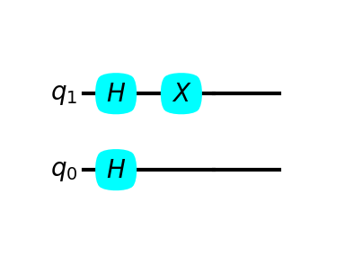
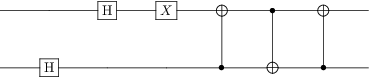
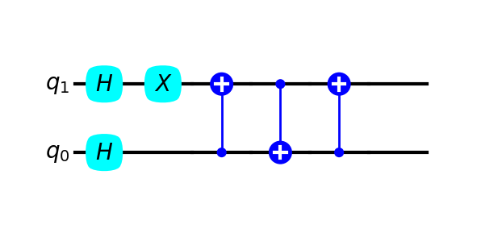
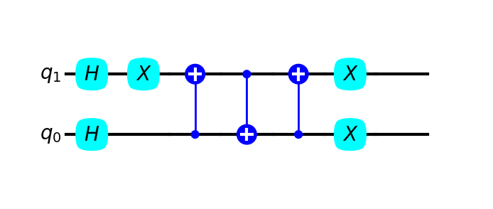
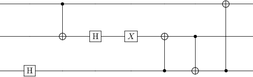
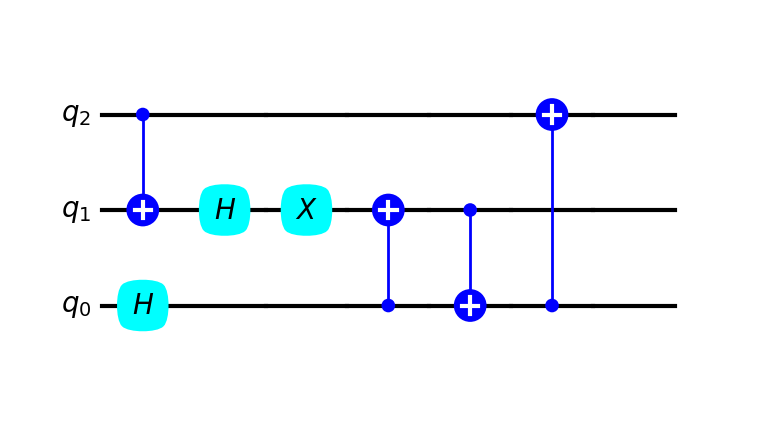
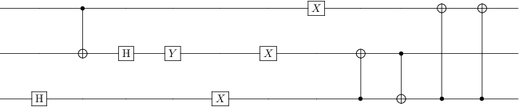
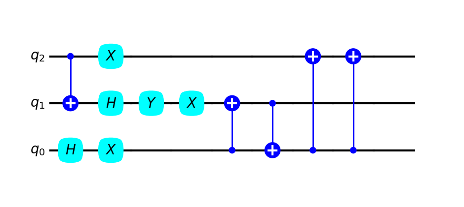

import matplotlib.pyplot as plt
from matplotlib.patches import Rectangle, FancyBboxPatch, Circle
import qutip
from qutip_qip.circuit import QubitCircuit
from qutip_qip.operations import GateWIRE_SEP = 0.7
LAYER_SEP = 0.6
PAD_LABEL = 0.3
GATE_HEIGHT = 0.2
GATE_WIDTH = 0.2
GATE_PAD = (LAYER_SEP - GATE_WIDTH)/2
FONT_SIZE = 10def draw_wire(ax, n_wires):
n_layers=2
wires = [[(0, n_layers*LAYER_SEP) , (i*WIRE_SEP, i*WIRE_SEP) ] for i in range(n_wires)]
for wire in wires:
line = plt.Line2D(xdata=wire[0], ydata=wire[1], color='black', zorder=1)
ax.add_line(line)def extend_wire(ax, n_wires, old_layers, add_layers):
wires = [[(old_layers * LAYER_SEP, (old_layers + add_layers) * LAYER_SEP), (i * WIRE_SEP, i * WIRE_SEP)] for i in range(n_wires)]
for wire in wires:
line = plt.Line2D(xdata=wire[0], ydata=wire[1], color='black', zorder=1)
ax.add_line(line)def add_labels(ax, n_wires, wire_labels=[]):
if wire_labels == []:
wire_labels = [f"$q_{{{i}}}$" for i in range(n_wires)]
for i, label in enumerate(wire_labels):
ax.text(-PAD_LABEL, i * WIRE_SEP, label, fontsize=FONT_SIZE, verticalalignment='center')def draw_control_node(ax, layer, target):
# make a circle patch
node = Circle((layer * LAYER_SEP + LAYER_SEP / 2, target * WIRE_SEP), 0.05, facecolor='blue', zorder=2)
ax.add_patch(node)def draw_target_node(ax, layer, target):
TARGET_RADIUS = 0.12
# Draw the target node as a circle
node = Circle((layer * LAYER_SEP + LAYER_SEP / 2, target * WIRE_SEP), TARGET_RADIUS, facecolor='blue', zorder=2)
ax.add_patch(node)
# Draw plus sign
vertical = plt.Line2D((layer * LAYER_SEP + LAYER_SEP / 2, layer * LAYER_SEP + LAYER_SEP / 2),
(target * WIRE_SEP - TARGET_RADIUS/2, target * WIRE_SEP + TARGET_RADIUS/2),
linewidth=1.5, color='white', zorder=3)
horizontal = plt.Line2D((layer * LAYER_SEP + LAYER_SEP / 2 - TARGET_RADIUS/2, layer * LAYER_SEP + LAYER_SEP / 2 + TARGET_RADIUS/2),
(target * WIRE_SEP, target * WIRE_SEP),
linewidth=1.5, color='white', zorder=3)
ax.add_line(vertical)
ax.add_line(horizontal)# add SWAP GATE mark "X"" on the target qubit
def draw_swap_mark(ax, layer, wire):
# Draw the diagonal lines to form an "X"
dia_left = plt.Line2D(
[layer * LAYER_SEP + LAYER_SEP / 2 - GATE_WIDTH / 3, layer * LAYER_SEP + LAYER_SEP / 2 + GATE_WIDTH / 3],
[wire * WIRE_SEP - GATE_HEIGHT / 2, wire * WIRE_SEP + GATE_HEIGHT / 2],
color="blue", linewidth=1.5, zorder=3
)
dia_right = plt.Line2D(
[layer * LAYER_SEP + LAYER_SEP / 2 + GATE_WIDTH / 3, layer * LAYER_SEP + LAYER_SEP / 2 - GATE_WIDTH / 3],
[wire * WIRE_SEP - GATE_HEIGHT / 2, wire * WIRE_SEP + GATE_HEIGHT / 2],
color="blue", linewidth=1.5, zorder=3
)
ax.add_line(dia_left)
ax.add_line(dia_right)
def draw_bridge(ax, layer, wire1, wire2):
bridge = plt.Line2D(
[layer*LAYER_SEP + LAYER_SEP/2, layer*LAYER_SEP + LAYER_SEP/2],
[wire1*WIRE_SEP, wire2*WIRE_SEP],
color='blue', linewidth=1, zorder=2
)
ax.add_line(bridge)def multiq_add_gate(ax, layer, gate):
# check if gate is a qutip Gate
if not isinstance(gate, Gate):
print("Gate is not a qutip Gate")
return
# check if gate has multiple targets
if gate.name == "CNOT":
draw_control_node(ax, layer, gate.controls[0],)
draw_target_node(ax, layer, gate.targets[0])
draw_bridge(ax, layer, gate.targets[0], gate.controls[0])
if gate.name == "SWAP":
draw_swap_mark(ax, layer, gate.targets[0])
draw_swap_mark(ax, layer, gate.targets[1])
draw_bridge(ax, layer, gate.targets[0], gate.targets[1])# adding gate, currently only works for qutip Gates
def add_gate(ax, layer, gate):
if isinstance(gate, Gate):
pass
# print("Gate is a qutip Gate")
else:
pass
# print("Gate is not a qutip Gate")
gate_label = f"${gate.name}$"
gate_wire = gate.targets[0]
gate_patch = FancyBboxPatch(
(layer * LAYER_SEP + GATE_PAD, gate_wire * WIRE_SEP - GATE_HEIGHT / 2),
GATE_WIDTH,
GATE_HEIGHT,
boxstyle="round4",
mutation_scale=0.3,
facecolor="aqua",
edgecolor="aqua",
zorder=2
)
# gate_patch = Rectangle((layer*LAYER_SEP + GATE_PAD, gate_wire*WIRE_SEP - GATE_HEIGHT/2), GATE_WIDTH, GATE_HEIGHT, facecolor='aqua', zorder=2)
ax.add_patch(gate_patch)
# add gate label
ax.text(layer*LAYER_SEP + GATE_PAD + GATE_WIDTH/2, gate_wire*WIRE_SEP, gate_label, fontsize=FONT_SIZE, verticalalignment='center', horizontalalignment='center')
def canvas_plot(qc, height, width):
fig, ax = plt.subplots(figsize=(width, height))
nwire = qc.N
display_layers = 2
draw_wire(ax, nwire) # generalize TODO
add_labels(ax, nwire)
# make a dict with wire_labels as keys and zero values
gate_maintain = {f"q{i}": 0 for i in range(nwire)}
for gate in qc.gates:
if len(gate.targets) == 1 and gate.controls == None:
add_gate(ax, gate_maintain[f"q{gate.targets[0]}"], gate)
gate_maintain[f"q{gate.targets[0]}"] += 1
else:
multiq_add_gate(ax, gate_maintain[f"q{gate.targets[0]}"], gate)
# update all values to multiqubot target
temp = gate_maintain[f"q{gate.targets[0]}"] + 1
gate_maintain = {key:temp for key in gate_maintain.keys()}
if max(gate_maintain.values()) >= display_layers:
extend_wire(ax, nwire, display_layers, add_layers=1)
display_layers += 1
ax.set_ylim(-WIRE_SEP, nwire*WIRE_SEP)
ax.set_xlim(-LAYER_SEP, (display_layers + 1)*LAYER_SEP)
ax.set_aspect('equal')
ax.axis('off')
fig.set_dpi(200)def calsize(qc):
n_wires = qc.N
height = n_wires * 0.393701 * WIRE_SEP * 3
width = 10
return height, widthqc = QubitCircuit(3)
qc.add_gate("H", targets=[0])
qc.add_gate("H", targets=[1])
qc.add_gate("X", targets=[2])
qc.gates[0].targets, qc.png
h, w = calsize(qc)
canvas_plot(qc, h, w)
qc
qc = QubitCircuit(2)
qc.add_gate("H", targets=[0])
qc.add_gate("H", targets=[1])
qc.add_gate("X", targets=[1])
qc.gates[0].targets, qc.png
h, w = calsize(qc)
canvas_plot(qc, h, w)
qc = QubitCircuit(2)
qc.add_gate("H", targets=[0])
qc.add_gate("H", targets=[1])
qc.add_gate("X", targets=[1])
qc.add_gate("CNOT", controls=[0], targets=[1])
qc.add_gate("CNOT", controls=[1], targets=[0])
qc.add_gate("CNOT", controls=[0], targets=[1])
qc
h, w = calsize(qc)
canvas_plot(qc, h, w)
qc.add_1q_gate("X")
canvas_plot(qc, h, w)
qc = QubitCircuit(3)
qc.add_gate("H", targets=[0])
qc.add_gate("CNOT", targets=[1], controls=[2])
qc.add_gate("H", targets=[1])
qc.add_gate("X", targets=[1])
qc.add_gate("CNOT", controls=[0], targets=[1])
qc.add_gate("CNOT", controls=[1], targets=[0])
qc.add_gate("CNOT", controls=[0], targets=[2])qc
h, w = calsize(qc)
canvas_plot(qc, h, w)
qc = QubitCircuit(3)
qc.add_gate("H", targets=[0])
qc.add_gate("CNOT", targets=[1], controls=[2])
qc.add_gate("H", targets=[1])
qc.add_gate("Y", targets=[1])
qc.add_1q_gate("X")
qc.add_gate("CNOT", controls=[0], targets=[1])
qc.add_gate("CNOT", controls=[1], targets=[0])
qc.add_gate("CNOT", controls=[0], targets=[2])
qc.add_gate("CNOT", controls=[0], targets=[2])
qc
h, w = calsize(qc)
canvas_plot(qc, h, w)